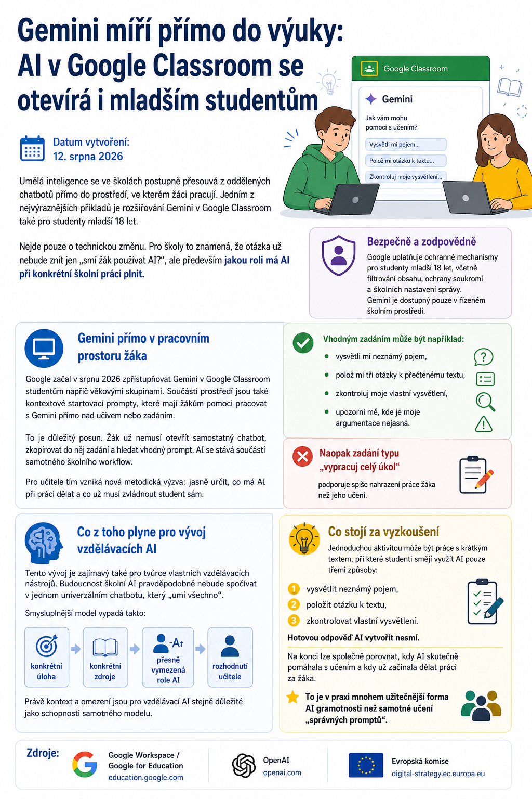

Umělá inteligence se ve školách postupně přesouvá z oddělených chatbotů přímo do prostředí, ve kterém žáci pracují. Jedním z nejvýraznějších příkladů je rozšiřování Gemini v Google Classroom také pro studenty mladší 18 let.

Nejde pouze o technickou změnu. Pro školy to znamená, že otázka už nebude znít jen „smí žák používat AI?“, ale především jakou roli má AI při konkrétní školní práci plnit.
Gemini přímo v pracovním prostoru žáka
Google začal v srpnu 2026 zpřístupňovat Gemini v Google Classroom studentům napříč věkovými skupinami. Součástí prostředí jsou také kontextové startovací prompty, které mají žákům pomoci pracovat s Gemini přímo nad učivem nebo zadáním.
To je důležitý posun. Žák už nemusí otevřít samostatný chatbot, zkopírovat do něj zadání a hledat vhodný prompt. AI se stává součástí samotného školního workflow.
Pro učitele tím vzniká nová metodická výzva: jasně určit, co má AI při práci dělat a co už musí zvládnout student sám.
Dobré zadání nepřenáší práci žáka na AI.
Pomáhá mu lépe porozumět učivu, formulovat vlastní myšlenky a odhalit místo, kterému zatím nerozumí.
Vhodným zadáním může být například:
- vysvětli mi neznámý pojem,
- polož mi tři otázky k přečtenému textu,
- zkontroluj moje vlastní vysvětlení,
- upozorni mě, kde je moje argumentace nejasná.
Naopak zadání typu „vypracuj celý úkol“ podporuje spíše nahrazení práce žáka než jeho učení.
Co z toho plyne pro vývoj vzdělávacích AI
Tento vývoj je zajímavý také pro tvůrce vlastních vzdělávacích nástrojů. Budoucnost školní AI pravděpodobně nebude spočívat v jednom univerzálním chatbotu, který „umí všechno“.
Smysluplnější model vypadá takto:
- konkrétní úloha →
- konkrétní zdroje →
- přesně vymezená role AI →
- rozhodnutí učitele.
Právě kontext a omezení jsou pro vzdělávací AI stejně důležité jako schopnosti samotného modelu.
Co stojí za vyzkoušení
Jednoduchou aktivitou může být práce s krátkým textem, při které studenti smějí využít AI pouze třemi způsoby:
- vysvětlit neznámý pojem,
- položit otázku k textu,
- zkontrolovat vlastní vysvětlení.
Hotovou odpověď AI vytvořit nesmí.
Na konci lze společně porovnat, kdy AI skutečně pomáhala s učením a kdy už začínala dělat práci za žáka.
To je v praxi mnohem užitečnější forma AI gramotnosti než samotné učení „správných promptů“.
Zdroje
Google Workspace / Google for Education · OpenAI · Evropská komise.